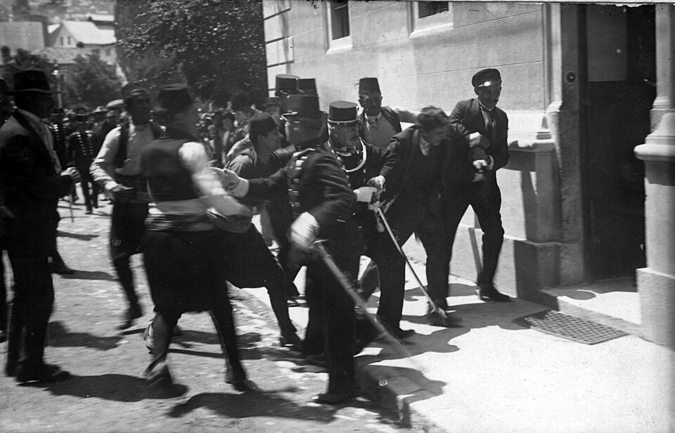
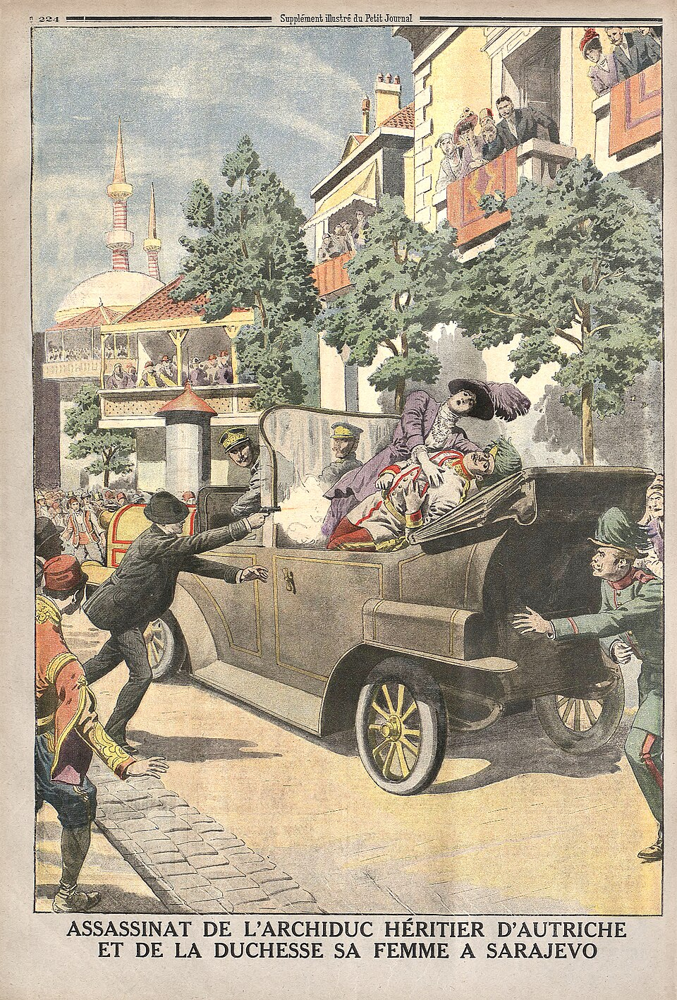

⏱️ 10초 카드 · 1차 세계대전의 도화선 (1894~1918)
사라예보의 암살자청년 보스니아민족운동엇갈린 기억
여는 질문 — 목적이 옳으면, 그 결과까지 옳은 걸까?
이름
한국어가브릴로 프린치프
원어Гаврило Принцип
실제 발음가브릴로 프린치프
로마자Gavrilo Princip
영어권Gavrilo Princip
별칭사라예보의 암살자
왜 이 사람인가
같은 사람이 정반대로 기억되는 대표 사례예요 — 누군가에겐 압제에 맞선 청년, 누군가에겐 끔찍한 전쟁을 부른 암살자. '행동의 의도'와 '행동의 결과'를 어떻게 함께 봐야 하는지 묻게 해요.
생애
페르디난트 대공 부부를 쏜 열아홉 살의 청년이에요. 보스니아의 세르비아계로, 오스트리아-헝가리의 지배에서 벗어나려는 민족운동에 가담했어요.
그의 총격은 1차 세계대전의 도화선이 됐어요. 너무 어려 사형은 면했지만, 감옥에서 병을 얻어 스물셋에 세상을 떠났어요.
누군가에겐 압제에 맞선 청년, 누군가에겐 끔찍한 전쟁을 부른 암살자예요. 같은 사람이 정반대로 기억되는 이유를 생각해 볼 만해요.
자료로 보기 — 유묵·사진


남긴 말
“나는 남슬라브 민족주의자다. 우리 민족이 오스트리아에서 풀려나 하나가 되기를 바랐다.”
재판에서 자신의 동기를 밝힌 말이에요. 그의 행동이 개인적 원한이 아니라 민족운동의 일부였음을 보여 주죠. · 출처: 프린치프, 1914년 재판 진술
“내가 아니었더라도, 전쟁의 구실은 어떻게든 찾아졌을 것이다.”
옥중 면담에서 한 말이에요 — 자신의 한 발이 전쟁의 '도화선'이었을 뿐, '원인'은 더 깊은 곳에 있었다는 인식이죠. · 출처: 옥중 면담(정신과 의사 파펜하임 기록)
연표
- 1894출생
- 1914.6.28사라예보에서 대공 부부 암살
- 1914재판·수감(미성년에 가까워 사형 면함)
- 1918옥중 병사
한 청년의 짧고 무거운 길
보스니아 시골에서 시작해 사라예보의 한 모퉁이를 거쳐, 감옥에서 끝난 스물셋 해의 길이에요.
현재 지도 위 표시예요. 한 청년의 좁은 길이, 1천만 명의 운명과 얽히게 됐어요.
빛과 그림자'자유를 위한 행동'과 '수백만이 죽은 전쟁의 방아쇠'가 한 사람 안에 있어요. 목적이 옳다고 결과까지 옳은 건 아니라는 무거운 질문을 남겨요.
더 깊이 (고등·일반)
보스니아의 세르브계 청년
가난한 농가에서 태어난 그는, 오스트리아-헝가리의 지배에서 벗어나려는 '청년 보스니아' 운동에 가담했어요. 남슬라브 민족이 하나가 되기를 꿈꿨죠.
그날의 우연
첫 번째 폭탄이 빗나간 뒤, 암살은 실패로 끝나는 듯했어요. 그런데 대공의 차가 길을 잘못 들어 그가 있던 모퉁이에 멈춰 섰죠. 몇 미터 앞의 우연이 역사를 바꿨어요.
재판과 수감
범행 당시 그는 만 20세가 안 되어 사형을 피하고 20년형을 받았어요. 함께한 동지들도 재판을 받았죠.
옥중의 죽음(1918)
열악한 감옥에서 결핵을 얻어, 전쟁이 끝나기도 전에 스물셋의 나이로 숨졌어요. 자신이 당긴 방아쇠가 부른 전쟁의 끝을 보지 못한 거예요.
엇갈린 기억
세르비아 쪽에선 '자유의 영웅'으로 동상이 서 있고, 다른 쪽에선 '세계대전을 부른 테러범'으로 봐요. 한 인물을 평가할 때 '어느 자리에서 보느냐'가 얼마나 다른 그림을 그리는지 보여 주는 사람이에요.
사람의 그물 — 함께 읽을 인물
이 인물이 나오는 이야기
더 공부하기 — 여기서 출발하세요
📚 책으로
- 1차세계대전의 기원 ↗한 발의 총성이 어떻게 세계대전이 됐는지.
- 몽유병자들 ↗ · 크리스토퍼 클라크사라예보를 둘러싼 유럽의 결정들을 추적.
📜 1차 사료
- 가브릴로 프린치프 (브리태니커) ↗생애와 재판을 정리한 신뢰 자료.
🎬 영상으로
- 영상 — 페르디난트 암살은 어떻게 일어났나 (댄 스노) ↗ · History Hit역사가 댄 스노가 사라예보 현장을 따라가는 영어 영상.
📍 가 볼 곳
- 라틴 다리 (사라예보)암살이 일어난 바로 그 자리.
- 테레진 (체코)그가 수감되어 숨진 감옥이 있던 곳.